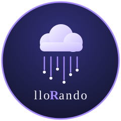

![Lifecycle: experimental]()



Porque a veces el clima te hace llorar… y los datos meteorológicos también. 😭
lloRando es un paquete de R que te lleva de un CSV del INTA a un gráfico del clima en pocas líneas: leé, resumí y graficá datos diarios de estaciones meteorológicas sin sufrir en el intento.
⚠️ Proyecto de práctica para Introducción a la Programación II. Es un paquete de prueba y no está pensado para un uso real.
{r rapido, eval=FALSE} library(lloRando)
tabla_resumen_temperatura(estaciones) grafico_temperatura_mensual(estaciones)
{r instalacion, eval=FALSE} install.packages(“remotes”) remotes::install_github(“maipochettino/lloRando”)
| Función | Para qué sirve |
|---|---|
| leer_datos() | Lee (o descarga) los datos de una estación |
| tabla_resumen_temperatura() | Mínima, máxima, promedio y desvío por estación |
| grafico_temperatura_mensual() | Temperatura media de cada mes del año |
| estaciones | Dataset con 5 estaciones listo para usar |
El dataset estaciones reúne observaciones diarias de cinco estaciones del INTA: NH0472, NH0910, NH0046, NH0098 y NH0437.
{r datos} library(lloRando)
dim(estaciones)
unique(estaciones$id)
head(estaciones[c(“id”, “fecha”, “temperatura_abrigo_150cm”)])
Los datos originales vienen del repositorio del curso.
leer_datos() recibe el id de la estación y la ruta del CSV. Si el archivo existe, lo lee; si no, lo descarga primero. Necesita Internet, así que este ejemplo no se ejecuta al construir el README:
{r lectura, eval=FALSE} datos <- leer_datos(id = “NH0437”, ruta = “datos/NH0437.csv”)
head(datos)
{r resumen} tabla_resumen_temperatura(estaciones)
¿Querés solo algunas estaciones? Usá ids:
{r resumen-filtrado} tabla_resumen_temperatura(estaciones, ids = c(“NH0437”, “NH0472”))
Los valores faltantes (NA) se ignoran en los cálculos.
El gráfico muestra el promedio de cada mes del año, juntando los mismos meses de todos los años. Podés elegir los colores y el título:
{r grafico-mensual} seleccion <- estaciones[estaciones$id %in% c(“NH0437”, “NH0472”), ]
grafico_temperatura_mensual( seleccion, colores = c(NH0437 = “steelblue”, NH0472 = “tomato”), titulo = “Temperatura media mensual” )
Cada función tiene su ayuda dentro de R:
{r ayuda, eval=FALSE} ?leer_datos ?tabla_resumen_temperatura ?grafico_temperatura_mensual
La guía de uso completa está en el sitio web del paquete.
¿Encontraste un error o tenés una idea? Leé la guía para contribuir. Todas las personas que participen deben respetar el código de conducta.
Código bajo licencia MIT. Mirá LICENSE.md.